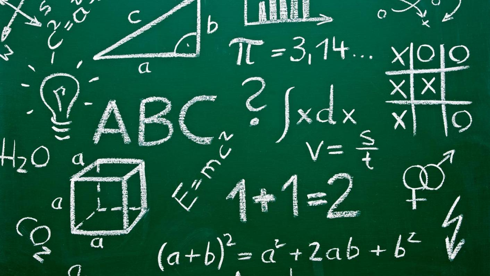
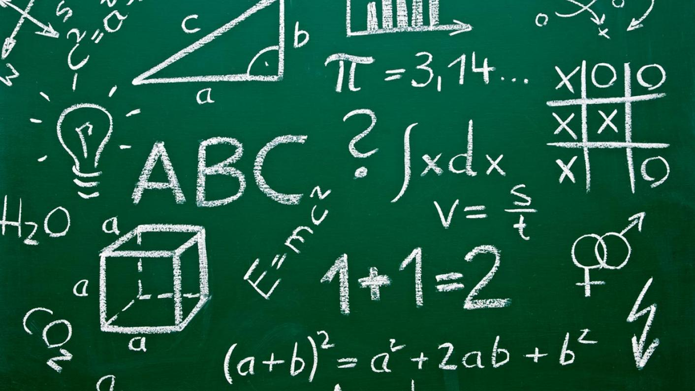

W tym segmencie artykułu dowiecie się o części teoretycznej czyli najwazniejsze definicje oraz proste zrozumienie informacji pokazanych w tym artykule. Z pewnością przyda wam się na początek dobre przedstawienie co to wogóle jest. Zachęcam do skorzystania z naszej strony :)
W tym segmencie artykułu dowiecie się o zadaniach jakie występują w szkoła i na maturze z matematyki oraz rozwiązania. Z pewnością przyda wam się na początek dobre przedstawienie co to wogóle jest. Zachęcam do skorzystania z naszej strony :)
W tym segmencie artykułu dowiecie się o części teoretycznej czyli najwazniejsze definicje oraz proste zrozumienie informacji pokazanych w tym artykule oraz zadania i wzory. Z pewnością przyda wam się na początek dobre przedstawienie co to wogóle jest. Zachęcam do skorzystania z naszej strony :)